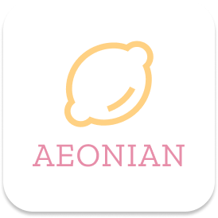
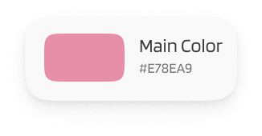
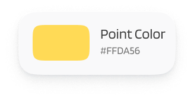
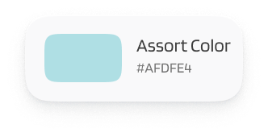

반려동물을 키우면서 외식할 때나, 카페에 가거나, 여행을 갈 때 함께할 수 없어서 어쩔 수 없이
집이나 호텔, 지인들에게 맡기는 경우가 많은데요 함께할 수 있는 곳이 있더라도 주변에 어디에 있는지
알 수가 없어서 그동안 곤란해하셨을 여러분들을 위해 편리하게 찾아볼 수 있도록 만든 서비스 플랫폼입니다.

브랜드 로고는 우리의 반려동물과 함께 언제 어디서든지 함께 하고 싶은 마음을 담아
‘영원하다’라는 뜻을 가진 ‘이오니언 (AEONIAN)’ 과 언제나 귀엽고 사랑스러운 아이들의
생기발랄함을 표현해줄 수 있는 노란색을 가진 ‘레몬’을 함께 조합하여 제작하였습니다.

브랜드의 이미지에 맞게 타이틀 폰트는 깔끔하면서도 무겁지 않은
‘G마켓 산스’를 사용하였고, 본문 폰트는 ‘Noto Sans KR’을 사용하여 가독성을 높였습니다.
사랑스러움을 상징하는 ‘핑크’와 생기발랄함을 상징하는 ‘옐로우’를 메인컬러로 사용하였고,
전반적은 밝고 채도 있는 컬러들을 잡아줄 수 있는 블루계열의 색상을 사용하여서 브랜드의 이미지를 잘 나타낼 수 있도록 하였습니다.



메인 홈 화면의 상단에는 이용했던 장소의 후기와 참여할 수 있는
광고·이벤트 등을 배치하여 앱에 들어와 제일 처음 확인할 수 있도록 하였고,
원하는 장소를 카테고리별로 정리하여 편리하게 찾아볼 수 있도록 하였습니다.
이용자들의 방문 장소와 이용 후기를 서로 공유함으로써
어느 장소가 방문하기에 좋은지, 혹은 별로인지를 편리하게
알 수 있도록 하였습니다.
내가 마음에 들어 했던 장소들을 한곳에 모아두어
언제든지 확인할 수 있게끔 하였습니다.
마이페이지에서는 마이펫 정보를 등록하거나,
프로필을 설정할 수도 있고 이용하면서 궁금했던
질문사항 등을 확인할 수 있도록 하였습니다.